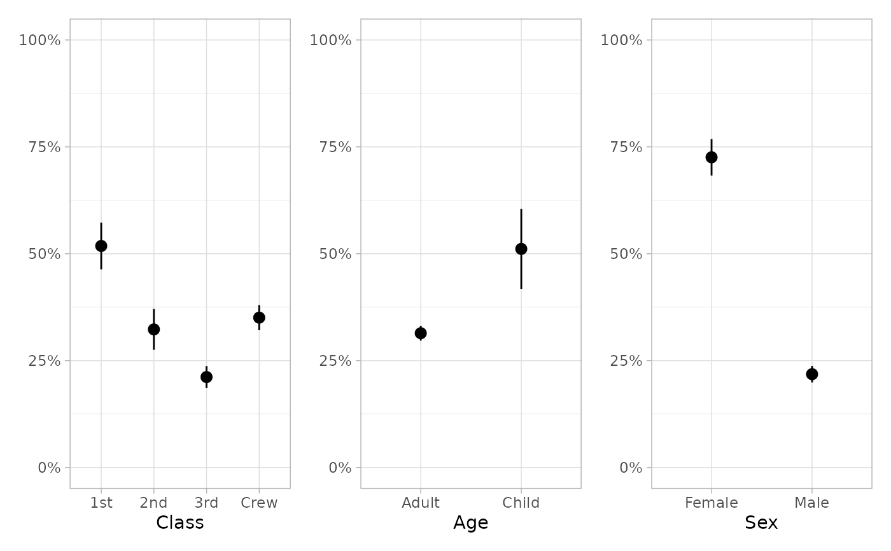
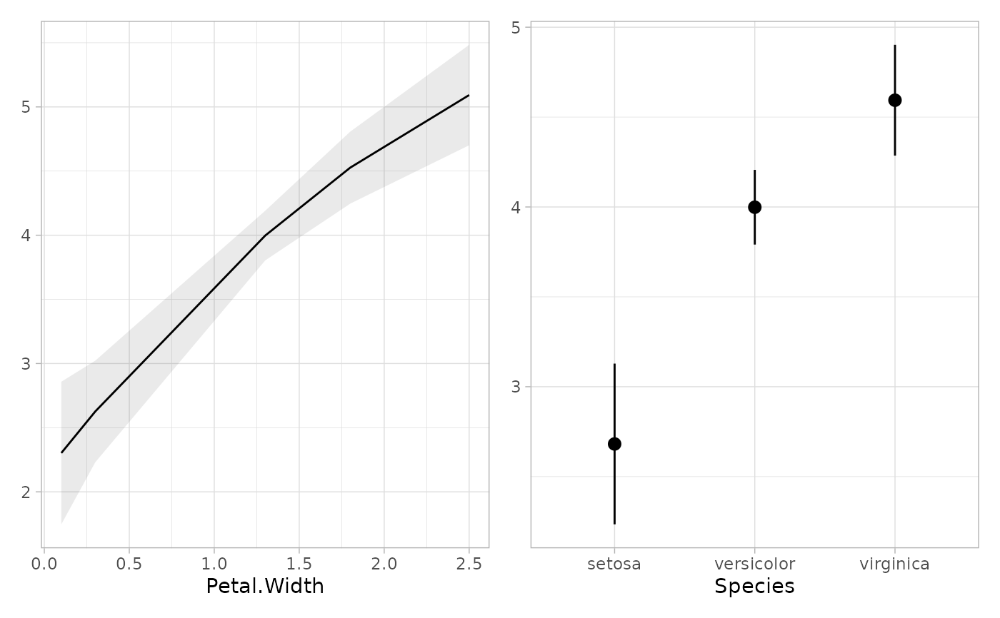
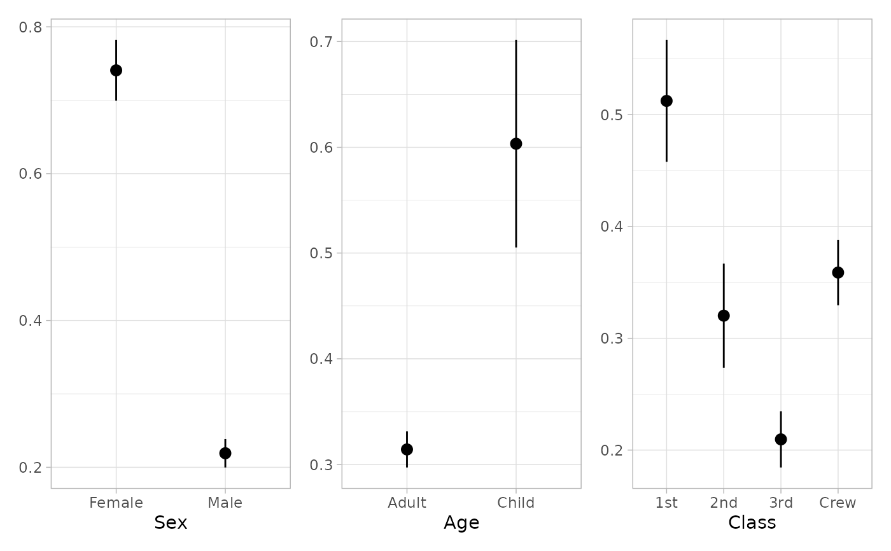
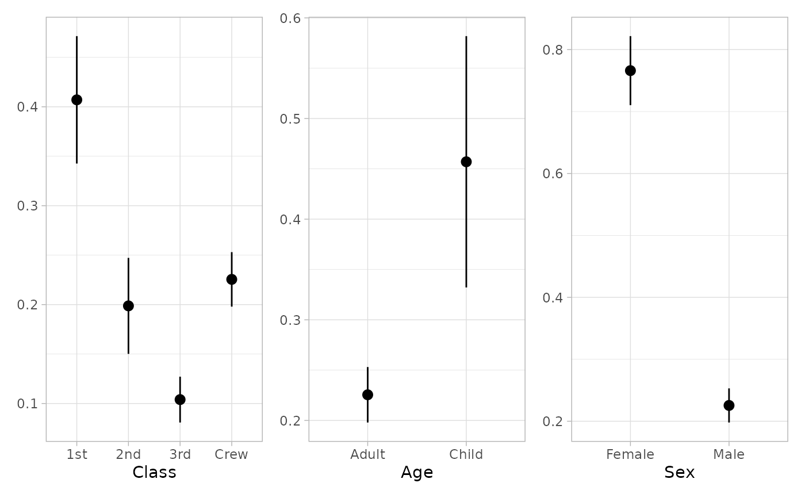

Marginal Predictions with marginaleffects::avg_predictions()
Source: R/marginal_tidiers.R
tidy_marginal_predictions.RdUse marginaleffects::avg_predictions() to estimate marginal predictions for
each variable of a model and return a tibble tidied in a way that it could
be used by broom.helpers functions.
See marginaleffects::avg_predictions() for a list of supported models.
Usage
tidy_marginal_predictions(
x,
variables_list = "auto",
conf.int = TRUE,
conf.level = 0.95,
...
)
variables_to_predict(
model,
interactions = TRUE,
categorical = unique,
continuous = stats::fivenum
)
plot_marginal_predictions(x, variables_list = "auto", conf.level = 0.95, ...)Arguments
- x
(a model object, e.g.
glm)
A model to be tidied.- variables_list
(
listorstring)
A list whose elements will be sequentially passed tovariablesinmarginaleffects::avg_predictions()(see details below); alternatively, it could also be the string"auto"(default) or"no_interaction".- conf.int
(
logical)
Whether or not to include a confidence interval in the tidied output.- conf.level
(
numeric)
The confidence level to use for the confidence interval (between0ans1).- ...
Additional parameters passed to
marginaleffects::avg_predictions().- model
(a model object, e.g.
glm)
A model.- interactions
(
logical)
Should combinations of variables corresponding to interactions be returned?- categorical
(
predictor values)
Default values for categorical variables.- continuous
(
predictor values)
Default values for continuous variables.
Details
Marginal predictions are obtained by calling, for each variable,
marginaleffects::avg_predictions() with the same variable being used for
the variables and the by argument.
Considering a categorical variable named cat, tidy_marginal_predictions()
will call avg_predictions(model, variables = list(cat = unique), by = "cat")
to obtain average marginal predictions for this variable.
Considering a continuous variable named cont, tidy_marginal_predictions()
will call avg_predictions(model, variables = list(cont = "fivenum"), by = "cont")
to obtain average marginal predictions for this variable at the minimum, the
first quartile, the median, the third quartile and the maximum of the observed
values of cont.
By default, average marginal predictions are computed: predictions are made
using a counterfactual grid for each value of the variable of interest,
before averaging the results. Marginal predictions at the mean could be
obtained by indicating newdata = "mean". Other assumptions are possible,
see the help file of marginaleffects::avg_predictions().
tidy_marginal_predictions() will compute marginal predictions for each
variable or combination of variables, before stacking the results in a unique
tibble. This is why tidy_marginal_predictions() has a variables_list
argument consisting of a list of specifications that will be passed
sequentially to the variables argument of marginaleffects::avg_predictions().
The helper function variables_to_predict() could be used to automatically
generate a suitable list to be used with variables_list. By default, all
unique values are retained for categorical variables and fivenum (i.e.
Tukey's five numbers, minimum, quartiles and maximum) for continuous variables.
When interactions = FALSE, variables_to_predict() will return a list of
all individual variables used in the model. If interactions = FALSE, it
will search for higher order combinations of variables (see
model_list_higher_order_variables()).
variables_list's default value, "auto", calls
variables_to_predict(interactions = TRUE) while "no_interaction" is a
shortcut for variables_to_predict(interactions = FALSE).
You can also provide custom specifications (see examples).
plot_marginal_predictions() works in a similar way and returns a list of
plots that could be combined with patchwork::wrap_plots() (see examples).
For more information, see vignette("marginal_tidiers", "broom.helpers").
See also
marginaleffects::avg_predictions()
Other marginal_tieders:
tidy_all_effects(),
tidy_avg_comparisons(),
tidy_avg_slopes(),
tidy_ggpredict(),
tidy_marginal_contrasts(),
tidy_margins()
Examples
# example code
# \donttest{
# Average Marginal Predictions
df <- Titanic |>
dplyr::as_tibble() |>
tidyr::uncount(n) |>
dplyr::mutate(Survived = factor(Survived, c("No", "Yes")))
mod <- glm(
Survived ~ Class + Age + Sex,
data = df, family = binomial
)
tidy_marginal_predictions(mod)
#> variable term estimate std.error statistic p.value s.value
#> 1 Class 1st 0.5181374 0.027913515 18.56224 6.493660e-77 253.08943
#> 2 Class 2nd 0.3229724 0.024270396 13.30726 2.100569e-40 131.80634
#> 3 Class 3rd 0.2115172 0.013107421 16.13721 1.397091e-58 192.18940
#> 4 Class Crew 0.3504908 0.015030300 23.31895 2.847801e-120 397.12152
#> 5 Age Adult 0.3140462 0.008827744 35.57491 3.424025e-277 918.39839
#> 6 Age Child 0.5112612 0.047737044 10.70995 9.141455e-27 86.49963
#> 7 Sex Female 0.7255784 0.021732608 33.38662 2.143988e-244 809.45016
#> 8 Sex Male 0.2182251 0.009932224 21.97142 5.405188e-107 353.01196
#> conf.low conf.high df
#> 1 0.4634279 0.5728469 Inf
#> 2 0.2754033 0.3705415 Inf
#> 3 0.1858272 0.2372073 Inf
#> 4 0.3210320 0.3799497 Inf
#> 5 0.2967441 0.3313482 Inf
#> 6 0.4176983 0.6048241 Inf
#> 7 0.6829832 0.7681735 Inf
#> 8 0.1987583 0.2376919 Inf
tidy_plus_plus(mod, tidy_fun = tidy_marginal_predictions)
#> # A tibble: 8 × 21
#> term variable var_label var_class var_type var_nlevels contrasts
#> <chr> <chr> <chr> <chr> <chr> <int> <chr>
#> 1 1st Class Class character categorical 4 contr.treatment
#> 2 2nd Class Class character categorical 4 contr.treatment
#> 3 3rd Class Class character categorical 4 contr.treatment
#> 4 Crew Class Class character categorical 4 contr.treatment
#> 5 Adult Age Age character dichotomous 2 contr.treatment
#> 6 Child Age Age character dichotomous 2 contr.treatment
#> 7 Female Sex Sex character dichotomous 2 contr.treatment
#> 8 Male Sex Sex character dichotomous 2 contr.treatment
#> # ℹ 14 more variables: contrasts_type <chr>, reference_row <lgl>, label <chr>,
#> # n_obs <dbl>, n_event <dbl>, estimate <dbl>, std.error <dbl>,
#> # statistic <dbl>, p.value <dbl>, s.value <dbl>, conf.low <dbl>,
#> # conf.high <dbl>, df <dbl>, label_attr <chr>
if (require("patchwork")) {
plot_marginal_predictions(mod) |> patchwork::wrap_plots()
plot_marginal_predictions(mod) |>
patchwork::wrap_plots() &
ggplot2::scale_y_continuous(limits = c(0, 1), label = scales::percent)
}
#> Loading required package: patchwork

mod2 <- lm(Petal.Length ~ poly(Petal.Width, 2) + Species, data = iris)
tidy_marginal_predictions(mod2)
#> variable term estimate std.error statistic p.value s.value
#> 1 Petal.Width 0.1 2.302462 0.28351129 8.121235 4.614622e-16 50.94464
#> 2 Petal.Width 0.3 2.626585 0.20194705 13.006308 1.126554e-38 126.06135
#> 3 Petal.Width 1.3 3.997316 0.09875586 40.476747 0.000000e+00 Inf
#> 4 Petal.Width 1.8 4.526502 0.14311589 31.628228 1.511205e-219 726.90655
#> 5 Petal.Width 2.5 5.092442 0.19970017 25.500436 1.949411e-143 474.07268
#> 6 Species setosa 2.681553 0.22806208 11.757994 6.424222e-32 103.61818
#> 7 Species versicolor 3.998581 0.10599505 37.724219 1.991348e-311 1032.12589
#> 8 Species virginica 4.593867 0.15720110 29.222868 9.935198e-188 621.20993
#> conf.low conf.high df
#> 1 1.746790 2.858134 Inf
#> 2 2.230776 3.022394 Inf
#> 3 3.803758 4.190874 Inf
#> 4 4.246000 4.807004 Inf
#> 5 4.701036 5.483847 Inf
#> 6 2.234559 3.128546 Inf
#> 7 3.790834 4.206327 Inf
#> 8 4.285758 4.901975 Inf
if (require("patchwork")) {
plot_marginal_predictions(mod2) |> patchwork::wrap_plots()
}

tidy_marginal_predictions(
mod2,
variables_list = variables_to_predict(mod2, continuous = "threenum")
)
#> variable term estimate std.error statistic p.value
#> 1 Petal.Width 0.437095664372987 2.839141 0.15360160 18.48380 2.788266e-76
#> 2 Petal.Width 1.19933333333333 3.878182 0.08698259 44.58572 0.000000e+00
#> 3 Petal.Width 1.96157100229368 4.675245 0.15291920 30.57331 2.771682e-205
#> 4 Species setosa 2.681553 0.22806208 11.75799 6.424222e-32
#> 5 Species versicolor 3.998581 0.10599505 37.72422 1.991348e-311
#> 6 Species virginica 4.593867 0.15720110 29.22287 9.935198e-188
#> s.value conf.low conf.high df
#> 1 250.9872 2.538088 3.140195 Inf
#> 2 Inf 3.707699 4.048664 Inf
#> 3 679.5245 4.375529 4.974962 Inf
#> 4 103.6182 2.234559 3.128546 Inf
#> 5 1032.1259 3.790834 4.206327 Inf
#> 6 621.2099 4.285758 4.901975 Inf
tidy_marginal_predictions(
mod2,
variables_list = list(
list(Petal.Width = c(0, 1, 2, 3)),
list(Species = unique)
)
)
#> variable term estimate std.error statistic p.value s.value
#> 1 Petal.Width 0 2.134153 0.32883856 6.489972 8.585239e-11 33.43935
#> 2 Petal.Width 1 3.629827 0.06654813 54.544386 0.000000e+00 Inf
#> 3 Petal.Width 2 4.709023 0.15519349 30.342916 3.115795e-202 669.38988
#> 4 Petal.Width 3 5.371741 0.31274119 17.176313 3.995104e-66 217.24902
#> 5 Species setosa 2.681553 0.22806208 11.757994 6.424222e-32 103.61818
#> 6 Species versicolor 3.998581 0.10599505 37.724219 1.991348e-311 1032.12589
#> 7 Species virginica 4.593867 0.15720110 29.222868 9.935198e-188 621.20993
#> conf.low conf.high df
#> 1 1.489641 2.778665 Inf
#> 2 3.499395 3.760259 Inf
#> 3 4.404849 5.013197 Inf
#> 4 4.758779 5.984702 Inf
#> 5 2.234559 3.128546 Inf
#> 6 3.790834 4.206327 Inf
#> 7 4.285758 4.901975 Inf
tidy_marginal_predictions(
mod2,
variables_list = list(list(Species = unique, Petal.Width = 1:3))
)
#> variable term estimate std.error statistic
#> 1 Species:Petal.Width setosa * 1 2.553380 0.25261804 10.107670
#> 2 Species:Petal.Width setosa * 2 3.632576 0.37561389 9.671036
#> 3 Species:Petal.Width setosa * 3 4.295293 0.42138340 10.193314
#> 4 Species:Petal.Width versicolor * 1 3.870408 0.08240088 46.970464
#> 5 Species:Petal.Width versicolor * 2 4.949603 0.11523718 42.951446
#> 6 Species:Petal.Width versicolor * 3 5.612321 0.35269179 15.912820
#> 7 Species:Petal.Width virginica * 1 4.465694 0.16675860 26.779393
#> 8 Species:Petal.Width virginica * 2 5.544890 0.05494211 100.922404
#> 9 Species:Petal.Width virginica * 3 6.207607 0.27675590 22.429901
#> p.value s.value conf.low conf.high df
#> 1 5.108488e-24 77.37338 2.058257 3.048502 Inf
#> 2 4.003040e-22 71.08132 2.896386 4.368765 Inf
#> 3 2.123982e-24 78.63950 3.469397 5.121190 Inf
#> 4 0.000000e+00 Inf 3.708905 4.031910 Inf
#> 5 0.000000e+00 Inf 4.723743 5.175464 Inf
#> 6 5.163415e-57 186.98158 4.921058 6.303584 Inf
#> 7 5.616443e-158 522.37498 4.138853 4.792535 Inf
#> 8 0.000000e+00 Inf 5.437205 5.652574 Inf
#> 9 2.010821e-111 367.72623 5.665176 6.750039 Inf
# Model with interactions
mod3 <- glm(
Survived ~ Sex * Age + Class,
data = df, family = binomial
)
tidy_marginal_predictions(mod3)
#> variable term estimate std.error statistic p.value
#> 1 Class 1st 0.5122895 0.027808537 18.422022 8.747378e-76
#> 2 Class 2nd 0.3202040 0.023739107 13.488461 1.828773e-41
#> 3 Class 3rd 0.2095767 0.012826104 16.339855 5.137458e-60
#> 4 Class Crew 0.3587744 0.014931355 24.028256 1.409203e-127
#> 5 Sex:Age Female * Adult 0.7419417 0.021989703 33.740416 1.477691e-249
#> 6 Sex:Age Female * Child 0.7217706 0.059574530 12.115422 8.751209e-34
#> 7 Sex:Age Male * Adult 0.2032339 0.009817925 20.700288 3.443036e-95
#> 8 Sex:Age Male * Child 0.5723894 0.060149318 9.516142 1.797282e-21
#> s.value conf.low conf.high df
#> 1 249.33768 0.4577857 0.5667932 Inf
#> 2 135.32818 0.2736762 0.3667318 Inf
#> 3 196.95463 0.1844380 0.2347154 Inf
#> 4 421.38999 0.3295095 0.3880393 Inf
#> 5 826.59675 0.6988427 0.7850408 Inf
#> 6 109.81607 0.6050067 0.8385345 Inf
#> 7 313.79949 0.1839911 0.2224767 Inf
#> 8 68.91467 0.4544989 0.6902799 Inf
tidy_marginal_predictions(mod3, "no_interaction")
#> variable term estimate std.error statistic p.value s.value
#> 1 Sex Female 0.7407251 0.021106996 35.09382 8.375192e-270 893.8545
#> 2 Sex Male 0.2191225 0.009889620 22.15682 8.966336e-109 358.9256
#> 3 Age Adult 0.3142777 0.008706732 36.09594 2.626188e-285 945.3565
#> 4 Age Child 0.6033792 0.050063504 12.05228 1.886667e-33 108.7078
#> 5 Class 1st 0.5122895 0.027808537 18.42202 8.747378e-76 249.3377
#> 6 Class 2nd 0.3202040 0.023739107 13.48846 1.828773e-41 135.3282
#> 7 Class 3rd 0.2095767 0.012826104 16.33986 5.137458e-60 196.9546
#> 8 Class Crew 0.3587744 0.014931355 24.02826 1.409203e-127 421.3900
#> conf.low conf.high df
#> 1 0.6993562 0.7820941 Inf
#> 2 0.1997392 0.2385058 Inf
#> 3 0.2972128 0.3313426 Inf
#> 4 0.5052565 0.7015018 Inf
#> 5 0.4577857 0.5667932 Inf
#> 6 0.2736762 0.3667318 Inf
#> 7 0.1844380 0.2347154 Inf
#> 8 0.3295095 0.3880393 Inf
if (require("patchwork")) {
plot_marginal_predictions(mod3) |>
patchwork::wrap_plots()
plot_marginal_predictions(mod3, "no_interaction") |>
patchwork::wrap_plots()
}

tidy_marginal_predictions(
mod3,
variables_list = list(
list(Class = unique, Sex = "Female"),
list(Age = unique)
)
)
#> variable term estimate std.error statistic p.value
#> 1 Class:Sex 1st * Female 0.8980680 0.015940475 56.33885 0.000000e+00
#> 2 Class:Sex 2nd * Female 0.7580905 0.030941646 24.50065 1.453635e-132
#> 3 Class:Sex 3rd * Female 0.5904013 0.031062772 19.00672 1.500524e-80
#> 4 Class:Sex Crew * Female 0.7978123 0.026646014 29.94115 5.736981e-197
#> 5 Age Adult 0.3142777 0.008706732 36.09594 2.626188e-285
#> 6 Age Child 0.6033792 0.050063504 12.05228 1.886667e-33
#> s.value conf.low conf.high df
#> 1 Inf 0.8668253 0.9293108 Inf
#> 2 437.9548 0.6974460 0.8187351 Inf
#> 3 265.1688 0.5295194 0.6512832 Inf
#> 4 651.8995 0.7455871 0.8500375 Inf
#> 5 945.3565 0.2972128 0.3313426 Inf
#> 6 108.7078 0.5052565 0.7015018 Inf
# Marginal Predictions at the Mean
tidy_marginal_predictions(mod, newdata = "mean")
#> variable term estimate std.error statistic p.value s.value
#> 1 Class 1st 0.4070382 0.03286740 12.384253 3.180314e-35 114.59831
#> 2 Class 2nd 0.1987193 0.02474435 8.030897 9.676261e-16 49.87640
#> 3 Class 3rd 0.1039594 0.01182240 8.793426 1.450667e-18 59.25799
#> 4 Class Crew 0.2254997 0.01405834 16.040279 6.685371e-58 189.93082
#> 5 Age Adult 0.2254997 0.01405834 16.040279 6.685371e-58 189.93082
#> 6 Age Child 0.4570172 0.06370387 7.174088 7.279079e-13 40.32131
#> 7 Sex Female 0.7660538 0.02841756 26.957057 4.714993e-160 529.27124
#> 8 Sex Male 0.2254997 0.01405834 16.040279 6.685371e-58 189.93082
#> conf.low conf.high df
#> 1 0.34261928 0.4714571 Inf
#> 2 0.15022129 0.2472174 Inf
#> 3 0.08078793 0.1271309 Inf
#> 4 0.19794588 0.2530536 Inf
#> 5 0.19794588 0.2530536 Inf
#> 6 0.33215988 0.5818745 Inf
#> 7 0.71035641 0.8217512 Inf
#> 8 0.19794588 0.2530536 Inf
if (require("patchwork")) {
plot_marginal_predictions(mod, newdata = "mean") |>
patchwork::wrap_plots()
}

# }